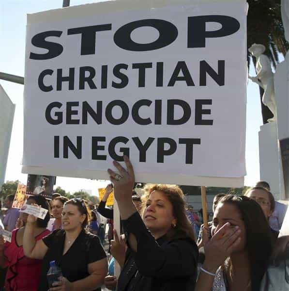

< < < Back
Why We Should Prioritize Christian Refugees From The Middle East – Return Of Kings
I am not a Christian but regard it as (tragically) amusing that precious little attention is paid to the declining fortunes (and numbers) of Christians in the Middle East. SJW and other “discourse” is replete with grossly exaggerated allegations of Islamophobia, whether in the context of American foreign policy debates or the purported “racism” within Western countries.
Yet the biggest existential threat to any religious group in both the Middle East and First World is actually against Christians in Arab Muslim-majority lands. Because countries like Saudi Arabia have official policies banning the free and open practicing of Judaism and Christianity, or prosecute intense de facto discrimination that ignores any constitutional or other legal lip service to “tolerance,” almost every Muslim Syrian or other Islamic refugee should be resettled in the Arabian heartlands.
There are far fewer places where Christians are welcomed in the world, so the West should prioritize their resettlement above all other groups.
The sad religious demographics of Iraq
How many Arab regimes in 2015 will elevate a Catholic like Tariq Aziz to anything above a meaningless secretarial position?
Ironically, the best friend of Iraq’s Christian community was Saddam Hussein. Although he definitely murdered his direct political opponents and many members of non-Sunni Arab groups, such as the Shias and Kurds, whom he found troublesome, his religious tolerance was far and away better than that now endorsed by many elements of Iraqi society (and that’s not including ISIS).
One of Saddam’s chief lieutenants, Tariq Aziz, who served as both Deputy Prime Minister and Foreign Minister, was a Chaldean Catholic, a group which has links with the regular Roman Catholic Church.
Iraq’s Christian population prior to the 2003 American-led invasion was probably around 1.5 million, somewhere between 5 and 10% of citizens. It was estimated at 200,000-400,000 in the middle of 2014, before further waves of ISIS massacres and repressions which killed thousands and forced many of the rest to flee across or simply out of the country.
Certainly tens of thousands of Sunnis, Shias, and Kurds have died during this time, but none of these groups is facing any kind of physical or cultural extinction. That cannot be said of Iraq’s Christians.
Considering that the once dominant Sunni Arab population, which constitutes about 30% of Iraq’s population, is feeling sidelined by the Shia majority, the situation is even worse for Iraqi Christians, who have insignificant support from the major political blocs. These blocs are run primarily on ethnic and religious lines, not as broad parties endorsing non-sectional ideologies.
The plight of Christians in other countries

The restoration of a theoretically secular regime in Egypt has not brought it out of the doldrums when it comes to religious intolerance against Christians.
Lebanon, which has the largest proportion of Christians in the Middle East, is still limping from its years of civil war and more recent examples of sectarian tensions and bloodshed. Muslim sects in the country may have “rallied” together to condemn national and regional violence against Christians, but the writing is very unambiguously on the wall.
Like in most countries, Muslim birthrates are much higher (and their populations younger) and Christians, with their greater representation in commerce and other arenas, are less inclined to engage themselves in Christian equivalents of martial religious political parties like Hezbollah.
Nominally “secular” Egypt, whose military deposed Islamist President Mohammed Morsi, remains a hotbed of anti-Christian sentiment, irrespective of the Coptic Orthodox minority living there being relatively large. The Pew Research Center has noted a strong continuity in anti-Christian attacks between the days of Morsi and the subsequent military takeover.
Egypt’s place as the Arab world’s most populous country makes such a state of affairs especially shocking. One need not go to Saudi Arabia or the other more traditionally religious Persian Gulf regimes of Qatar, Bahrain, or the United Arab Emirates to find either state-sponsored religious repression or prolific street-level bigotry.
This is not meant to be an exhaustive account by any stretch, but the Palestinian Christians also deserve some recognition. They number less than 2.5% of Palestinians in the West Bank and Gaza today, most likely around 1%, but in 1920 were 10% of the local Arab population. Today, more than 10% of all Palestinians, those within Palestine or outside it, are professed Christians. The extent to which they are not welcome or feel like foreigners in their ancestral lands is a microcosm of the isolation and pain felt by Christians across the Middle East.
Middle Eastern Christians are victims of Western political correctness
Don’t expect photographs like these to be disseminated about Middle Eastern Christian families, who face oppression regardless of whether there’s war or peace.
Western elites and SJWs will play the Islamophobia and race card at every opportunity. It is fine to defame their own societies, which are by and large thoroughly tolerant, if not over-tolerant. Nevertheless, they will never dare take the logical and moral step, in the interests of true tolerance, of challenging why the Middle East is becoming more and more inhospitable for Christians.
Many may hate their governments in the Middle East. This should not, however, be confused with a renunciation of anti-Christian bigotry by many of these disaffected citizens. They are not mutually exclusive positions.
Already despising the traditionalism associated with Christianity in the West, SJWs and others feel there is no political capital to be gained from responding to the needs of a much more systematically oppressed Middle Eastern Christian community. In the meantime, diplomatic and other channels that could utilized on behalf of these Christians are ignored to advance realpolitik with local Arab regimes.
Should you hear the words “humanitarianism” and “tolerance” when the topic of Middle Eastern refugees or asylum seekers comes up, you can bet your bottom dollar that both are being applied unevenly, without Christians in mind.
Read More: Could The Islamic State Reorder The Middle East?